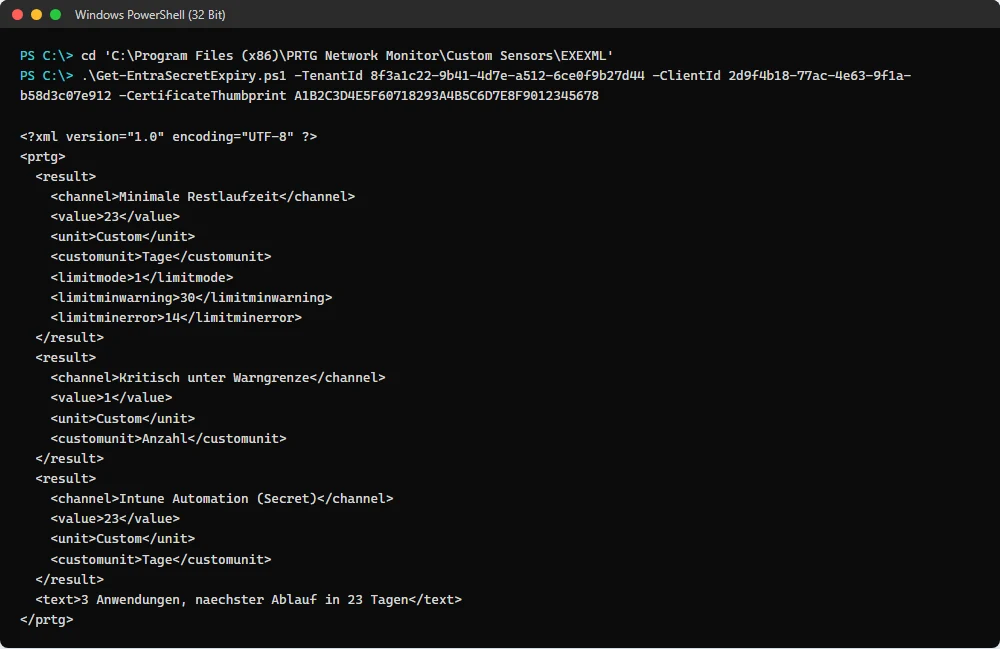
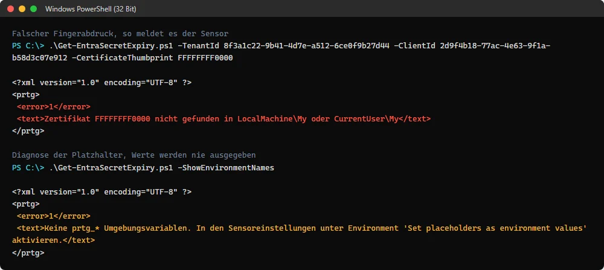

Warum das ohne Probe beim Kunden geht: Entra ID und Microsoft Graph sind
öffentliche Endpunkte. Der Sensor spricht ausschliesslich login.microsoftonline.com
und graph.microsoft.com über TCP 443. Kein Domain Controller, kein Tunnel,
kein Agent. Ein Kunde ohne eigenen Server wird genauso überwacht wie einer mit.
Teil 1: App-Registrierung im Kundentenant
Der Sensor braucht dieselbe App-Registrierung wie das Portal: eine Anwendungsberechtigung
Application.Read.All mit Admin Consent. Das Script erledigt Anlage, Consent und
Zugangsdatum in einem Durchgang.
Script ausführen
./New-MonitorAppRegistration.ps1 `
-TenantId 8f3a1c22-9b41-4d7e-a512-6ce0f9b27d44 `
-TenantKey contosoOhne weiteren Schalter entsteht ein Client Secret. Das ist der Normalfall: es funktioniert in jedem Tenant, und auf der PRTG-Instanz entfällt damit der Zertifikatsimport samt Rechtevergabe, also der Schritt, der am häufigsten schiefgeht.

Das Secret liegt danach an drei Stellen: im Geräte-Platzhalter und damit in der PRTG-Konfiguration, im Geräte-Dialog für jeden, der das Gerät bearbeiten darf, und in der Kommandozeile des Sensorprozesses, die jeder lokale Prozess mitlesen kann. Wer das nicht will oder in einem Tenant arbeitet, der Client Secrets verbietet, nimmt den Zertifikatsweg unten: dort steht in den Parametern nur der Fingerabdruck, und der ist kein Geheimnis.
Sonderfall: Zertifikat statt Secret
Nötig, wenn eine App Management Policy im Kundentenant Client Secrets verbietet oder
auf wenige Monate begrenzt. Das Script bekommt dann -CreateCertificate, und
auf der PRTG-Instanz kommt Arbeit dazu: der Sensor liest den privaten Schlüssel aus dem
Zertifikatsspeicher, nicht aus einer Datei.
openssl pkcs12 -export -inkey contoso.key -in contoso.crt -out contoso.pfx
Import-PfxCertificate -FilePath .\contoso.pfx `
-CertStoreLocation Cert:\LocalMachine\MyDanach in certlm.msc das Zertifikat suchen, Rechtsklick, Alle Aufgaben,
Private Schlüssel verwalten, und dem Dienstkonto von PRTG Leserecht geben.
Ohne diesen Schritt findet der Sensor das Zertifikat, kann es aber nicht benutzen.
In den Sensorparametern steht dann -CertificateThumbprint statt
-ClientSecret, und Platzhalter 3 bleibt leer.
Teil 2: Script auf der Instanz ablegen
Datei kopieren
prtg/Get-EntraSecretExpiry.ps1 aus dem Repository nach:
C:\Program Files (x86)\PRTG Network Monitor\Custom Sensors\EXEXML\Kam die Datei über einen Browser, muss sie entsperrt werden:
Unblock-File .\Get-EntraSecretExpiry.ps1
Execution Policy der 32-Bit-PowerShell setzen
Das ist der Schritt, den alle vergessen. Der Probe-Dienst ist auch auf
dem Core Server ein 32-Bit-Prozess und startet die 32-Bit-PowerShell. Deren Policy ist
von der 64-Bit-Policy unabhängig und auf Clients standardmässig Restricted.
# als Administrator in
# C:\Windows\SysWOW64\WindowsPowerShell\v1.0\powershell.exe
Set-ExecutionPolicy -Scope LocalMachine RemoteSignedPrüfen lässt sich das so:
& "$env:WINDIR\SysWOW64\WindowsPowerShell\v1.0\powershell.exe" `
-Command "Get-ExecutionPolicy -Scope LocalMachine"Fehlt der Schritt, schreibt PowerShell einen Klartextfehler nach stdout. PRTG meldet dann PE233 plus PE231, nicht etwa ein fehlendes Script.
Testlauf von Hand
Vor dem Anlegen des Sensors einmal direkt aufrufen. Die Ausgabe ist genau das XML, das PRTG später bekommt.
cd 'C:\Program Files (x86)\PRTG Network Monitor\Custom Sensors\EXEXML'
.\Get-EntraSecretExpiry.ps1 -TenantId <tenant> -ClientId <client> `
-ClientSecret <secret>
Teil 3: Gerät und Sensor in PRTG
Ein Gerät pro Kundentenant an der lokalen Probe, als Host graph.microsoft.com,
ohne Ping-Sensor und ohne Auto-Discovery.
Zugangsdaten am Gerät
In den Geräteeinstellungen die Sektion Credentials for Script Sensors füllen. Nicht Credentials for Microsoft 365, die ist den eingebauten Sensoren vorbehalten.
| Platzhalter | Beschreibung | Wert |
|---|---|---|
| Placeholder 1 | Entra Tenant ID | Verzeichnis-ID |
| Placeholder 2 | Entra Client ID | Anwendungs-ID (AppId) |
| Placeholder 3 | Entra Client Secret | Wert aus dem Script |
Sensor anlegen
Der Sensor heisst nicht wie das Script. Im Dialog Add Sensor den Filter Monitor What? auf Custom Sensors setzen und EXE/Script Advanced suchen. Erst im zweiten Schritt erscheint das Script in der Auswahlliste EXE/Script.
| Einstellung | Wert |
|---|---|
| Sensor Name | Entra Secret Expiry |
| EXE/Script | Get-EntraSecretExpiry.ps1 |
| Parameters | -TenantId "%scriptplaceholder1" -ClientId "%scriptplaceholder2" -ClientSecret "%scriptplaceholder3" |
| Environment | Default |
| Security Context | Use security context of probe service |
| Mutex Name | entra-secret-monitor |
| Timeout | 120 Sekunden |
| Result Handling | Store result in case of error |
| Primary Channel | Minimale Restlaufzeit |
| Scanning Interval | Vererbung aus, 6 Stunden |
Das Intervall bitte wirklich ändern. Die Vorgabe von 60 Sekunden sind 1440 Graph-Abfragen pro Tag und Tenant, für eine Zahl, die sich einmal täglich um eins ändert. Der Mutex sorgt zusätzlich dafür, dass die Kundensensoren nacheinander laufen statt gleichzeitig.
Wenn ein Zertifikat verwendet wird
Dann tritt der Fingerabdruck an die Stelle von Placeholder 3, der leer bleibt:
-TenantId "%scriptplaceholder1" -ClientId "%scriptplaceholder2" -CertificateThumbprint "A1B2C3..."Kanäle
| Kanal | Einheit | Grenzwerte |
|---|---|---|
| Minimale Restlaufzeit | Tage | gelb unter WarnDays, rot unter ErrorDays |
| Kritisch unter Warngrenze | Anzahl | gelb ab 1 |
| Abgelaufen | Anzahl | rot ab 1 |
<App> (Secret) bzw. (Zertifikat) | Tage | wie oben |
Namen, Einheiten und Grenzwerte sind identisch mit der XML-Ausgabe des Containers. Ein bestehender Sensor kann deshalb von der einen auf die andere Quelle wechseln und behält seine Historie.
Fehlerbilder
Fehler kommen als <error>1</error> mit Klartext zurück, der Exit
Code bleibt 0. Der AADSTS-Code von Entra steht in der Meldung, damit die Ursache direkt im
Sensor sichtbar ist.

-ShowEnvironmentNames. Werte der Platzhalter werden dabei nie ausgegeben.| Meldung | Ursache |
|---|---|
AADSTS90002 Tenant not found | Tenant-ID falsch |
AADSTS700016 Application not found | Client-ID falsch oder App im falschen Tenant |
AADSTS7000215 Invalid client secret | Secret falsch oder abgelaufen |
AADSTS700027 client assertion | Zertifikat nicht in der App-Registrierung hinterlegt |
HTTP 403 auf /applications | Application.Read.All fehlt oder kein Admin Consent |
Zertifikat ... nicht gefunden | falscher Store, oder PRTG-Dienstkonto hat kein Leserecht auf den privaten Schlüssel |
HTTP 0 auf .../token | ausgehend 443 fehlt oder Proxy nicht gesetzt (-Proxy) |
Keine Tenant ID | Platzhalter leer, mit -ShowEnvironmentNames prüfen |
| PE233 und PE231 | Execution Policy der 32-Bit-PowerShell fehlt |
| Script fehlt in der Auswahlliste | falsche Probe-Maschine, oder Probe-Dienst noch nicht neu gestartet |
Die Rohausgabe eines Laufs landet bei Store result unter
C:\ProgramData\Paessler\PRTG Network Monitor\Logs\sensors.